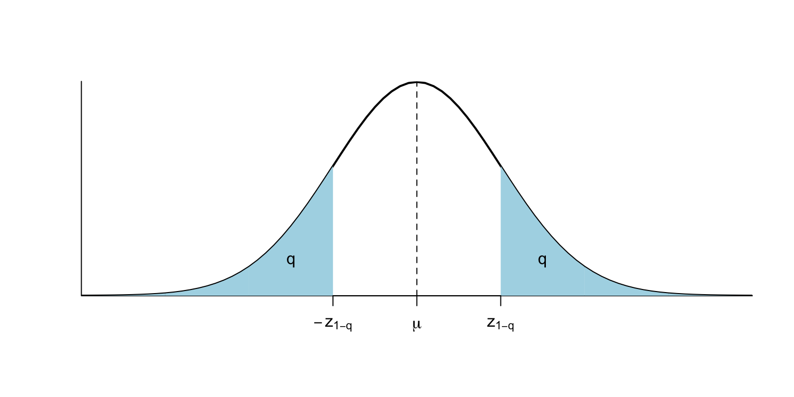

Test de la lliçó 2
(1) Sigui \(X\) una variable aleatòria de mitjana \(\mu\) i desviació típica \(\sigma\). Quina o quines de les afirmacions següents són sempre vertaderes?
- \(E(X+2)=\mu+2\).
- \(\sigma(X+2)=\sigma+2\).
- \(\sigma(-X)=-\sigma\).
- \(\sigma(-X)=\sigma\).
- \(\sigma(X/2)=\sigma/2\).
- Cap de les altres afirmacions és vertadera.
(2) La funció de distribució \(F_X(x)\) d’una variable aleatòria \(X\) ens dóna:
- La probabilitat d’obtenir el valor \(x\).
- La probabilitat d’obtenir un valor entre \(-x\) i \(x\), tots dos extrems inclosos.
- La probabilitat d’obtenir un valor entre 0 i \(x\), tots dos extrems inclosos.
- La probabilitat d’obtenir un valor més petit o igual que \(x\).
- La probabilitat d’obtenir un valor estrictament més petit que \(x\).
(3) Quina o quines de les variables següents tenen distribució binomial?
- El pes d’una persona triada a l’atzar.
- Triam un nombre de llançaments a l’atzar, llançam aquest nombre de vegades una moneda, i comptam el nombre de cares.
- El nombre de glòbuls vermells en 1 mm3 de sang.
- La proporció d’hipertensos en una mostra aleatòria de 50 individus.
- Triam 10 estudiants diferents en una classe de 20, i comptam quantes dones han sortit.
- Triam un grup d’estudiants en una classe de 100, permetent repeticions, i comptam quantes dones han sortit.
- Cap d’elles.
(4) Quina o quines de les variables següents tenen una distribució de Poisson?
- El pes d’una persona triada a l’atzar.
- El nombre de casos diaris de COVID-19 a Mallorca.
- El nombre de glòbuls vermells en 1 mm3 de sang.
- La proporció d’hipertensos en una mostra aleatòria de 50 individus.
- Triam 10 estudiants diferents en una classe de 20, i comptam quantes dones han sortit.
- Cap d’elles.
(5) El nombre anual d’accidents laborals d’un tipus concret segueix una distribució de Poisson. Al llarg del temps s’ha observat que el 55% dels anys no es produeix cap accident d’aquests. Quin valor estimes que té el paràmetre \(\lambda\) d’aquesta distribució de Poisson?
- 0.55
- \(e^{-0.55}\)
- \(\ln(0.55)\)
- \(-\ln(0.55)\)
- Un valor que no és cap dels proposats en les altres respostes.
(6) Sigui \(X\) una variable aleatòria contínua de funció de densitat:
\[
f_X(x)=\left\{\begin{array}{ll}
0 & \mbox{si $x<0$}\\
\frac{2\sqrt{2}}{\sqrt{\pi}} e^{-2x^2} & \mbox{si $x\geqslant 0$}
\end{array}
\right.
\]
És cert que \(P(X=1)=2\sqrt{2}e^{-2}/\sqrt{\pi}\)?
- Sí
- No: en realitat \(P(X=1)=\int_{-\infty}^1 \frac{2\sqrt{2}}{\sqrt{\pi}} e^{-2x^2}\,dx\) però no sé calcular aquesta integral, o sí que sé calcular-la, però em fa mandra fer-ho.
- Això no és la funció de densitat d’una variable aleatòria contínua, perquè no és una funció contínua (en el 0 bota de 0 a \(2\sqrt{2}/\sqrt{\pi}\))
- Totes les altres respostes són incorrectes
(7) Sigui \(X\) una variable aleatòria contínua de mitjana \(\mu\). Què val \(P(X=\mu)\)?
- 0.5
- \(\mu\)
- 0
- Depèn de la variable aleatòria
- Totes les altres respostes són falses
(8) Sigui \(X\) una variable aleatòria contínua de moda \(M\). Què val \(P(X=M)\)?
- 1
- 0.5
- 0
- Depèn de la variable aleatòria, però és més gran que tots els altres valors de \(P(X=x)\)
- Depèn de la variable aleatòria, però és el valor màxim de la funció de densitat de \(X\).
- Totes les altres respostes són falses
(9) Sigui \(Z\) una variable aleatòria normal estàndard. Marca les afirmacions vertaderes.
- És asimètrica a l’esquerra.
- La seva mitjana és 1.
- La seva desviació típica és 0.
- La seva variància és 1.
- La seva mediana és 0.
(10) Sigui \(X\) una variable aleatòria \(N(\mu,\sigma)\) i \(f_X\) la seva funció de densitat. Què val l’àrea entre la corba \(y=f_X(x)\) i l’eix d’abscisses?
- 0
- \(\mu\)
- \(\sigma\)
- En general, no és ni \(\mu\) ni \(\sigma\), però sí que depèn de \(\mu\) i \(\sigma\)
- Totes les altres respostes són falses
(11) Siguin \(X\) una variable aleatòria \(N(\mu,\sigma)\). Quina de les afirmacions següents és vertadera?
- \(\mu\) és la mitjana de \(X\), però no la seva mediana
- \(\mu\) és la mitjana i la mediana de \(X\), però no la seva moda
- \(\mu\) és la mitjana, la mediana i la moda de \(X\), però no és veritat que \(P(X=\mu)>P(X=a)\) per a tot \(a\neq \mu\)
- \(\mu\) és la mitjana, la mediana i la moda de \(X\) i \(P(X=\mu)>P(X=a)\) per a tot \(a\neq \mu\)
- Totes les altres respostes són falses
(12) El FME (Flux Màxim d’Expiració) de les al·lotes d’11 anys segueix una distribució aproximadament normal de mitjana 300 l/min i desviació típica 20 l/min. Marca les afirmacions vertaderes:
- Aproximadament la meitat de les al·lotes d’11 anys tenen el FME entre 280 l/min i 320 l/min.
- Al voltant del 95% de les al·lotes d’11 anys tenen el FME entre 280 l/min i 320 l/min.
- Al voltant del 95% de les al·lotes d’11 anys tenen el FME entre 260 l/min i 340 l/min.
- Al voltant del 5% de les al·lotes d’11 anys tenen el FME inferior a 260 l/min.
- Cap al·lota d’11 anys té el FME superior a 360 l/min.
(13) Se sap que una variable bioquímica té com a mitjana 90 i desviació típica 10. Si prenem una mostra d’individus sans, és raonable esperar que aproximadament el 95% d’ells tenguin un valor d’aquesta variable comprès entre 70 i 110? (marca totes les respostes correctes):
- Sí, sempre.
- No, mai.
- Si la variable té distribució normal, sí.
- Si la mostra és prou gran, sí.
- Si la variable té distribució normal i la mostra és prou gran, sí.
(14) En una variable aleatòria contínua, la seva funció de densitat (marca una sola resposta):
- És sempre contínua
- Mesura com és de dens el seu domini.
- Aplicada a un nombre real, ens dóna la probabilitat d’obtenir-lo.
- Aplicada a un nombre real, ens dóna la probabilitat d’obtenir un valor menor o igual que ell.
- Totes les altres respostes són falses
(15) Sigui \(X\) una variable aleatòria contínua de desviació típica \(\sigma\). Què val la variància de la variable aleatòria \(-X/2\)?
- \(\sigma(-X/2)^2=-\sigma^2/2\).
- \(\sigma(-X/2)^2=\sigma^2/2\).
- \(\sigma(-X/2)^2=-\sigma^2/4\).
- \(\sigma(-X/2)^2=\sigma^2/4\).
- Totes les altres respostes són falses
(16) El temps que tarda a produir-se una determinada reacció bioquímica es distribueix segons una variable normal de mitjana 17 segons i desviació típica 3 segons. Sense fer cap càlcul, què podem deduir d’aquesta afirmació? Marca totes les respostes correctes:
- Tots aquests temps se situen entre 8 i 26 segons.
- Gairebé tots aquests temps se situen entre 11 i 23 segons.
- És estrictament més probable que una reacció d’aquestes tardi entre 16 i 18 segons que tardi entre 18 i 20 segons.
- És estrictament més probable que una reacció d’aquestes tardi entre 18 i 20 segons que tardi entre 16 i 18 segons.
- És estrictament més probable que una reacció d’aquestes tardi entre 18 i 20 segons que tardi entre 14 i 16 segons.
- Cap de les afirmacions anteriors és correcta.
(17) El temps que tarda a produir-se una determinada reacció bioquímica es distribueix segons una variable normal de mitjana 17 segons i desviació típica 3 segons. Quina és la probabilitat que tardi manco de 17 segons?
- 0
- 0.5
- 1
- 17/3
- Cap de les afirmacions anteriors és correcta.
(18) El temps que tarda a produir-se una determinada reacció bioquímica es distribueix segons una variable normal de mitjana 17 segons i desviació típica 3 segons. Quina o quines de les afirmacions següents són vertaderes?
- Si poguéssim mesurar els temps amb precisió infinita, observaríem que el temps que tarda més sovint és exactament 17 segons.
- Arrodonint a segons, el temps que tarda més sovint és 17 segons.
- En un 95% de les ocasions tarda aproximadament entre 14 i 20 segons.
- Tarda més de 20 segons amb la mateixa freqüència amb la qual tarda manco de 14 segons.
- Tarda més de 20 segons amb la mateixa freqüència amb la qual tarda manco de 20 segons.
- En un 95% de les ocasions tarda 23 segons o manco.
(19) Quina de les tres afirmacions és vertadera per a les tres distribucions normals de la figura inferior? (\(\sigma_1\), \(\sigma_2\) i \(\sigma_3\) indiquen les desviacions típiques de les corbes 1, 2 i 3, respectivament).
- \(\sigma_1> \sigma_2> \sigma_3\)
- \(\sigma_1< \sigma_2< \sigma_3\)
- \(\sigma_1= \sigma_2= \sigma_3\)
- Del gràfic no es pot deduir la relació entre les tres desviacions típiques
- Cap de les altres afirmacions és veritable.

(20) El pes mitjà d’una bossa de patates d’una determinada marca és de 150 grams amb una desviació típica de 5.6 grams. Quin és el z-score d’una bossa que pesa 147 grams (arrodonit a 2 xifres decimals)?
- -0.54
- 0.30
- 0.54
- 0.70
- Cap de les respostes anteriors és correcta
(21) Si una variable aleatòria normal té mitjana 18.1 i desviació típica 1.2, què val el seu 3er quartil (arrodonit a una xifra decimal)? (Empra R o una apli per calcular-lo)
- 18.1
- 18.9
- 19.3
- 20.5
- Cap de les respostes anteriors és correcta
(23) L’interval de referència (del 95%) de la concentració de creatinina en sèrum de les persones és 0.66-1.09 mg/dl. Què en podem deduir? (Marca només una resposta.)
Que la probabilitat que la concentració mitjana de creatinina en sèrum d’una persona estigui entre 0.66 i 1.09 mg/dl és del 95%.
Que si prenem una mostra aleatòria de persones i calculam la mitjana de les seves concentracions de creatinina, en un 95% de les ocasions aquesta mitjana estarà entre 0.66 i 1.09 mg/dl.
Que un 5% de les persones tenen una concentració de creatinina en sèrum superior a 1.09 mg/dl.
Que un 95% de les persones tenen una concentració de creatinina en sèrum entre 0.66 i 1.09 mg/dl.
Que si prenem una mostra aleatòria de persones, en un 95% de les ocasions tots els valors estaran entre 0.66 i 1.09 mg/dl.
Cap de les altres respostes és correcta.
(24) Quin és l’efecte sobre la mitjana, la desviació típica i la mediana d’una variable aleatòria si sumam 1 al seu valor sobre tots els individus de la població?
- Cap d’aquests paràmetres varia.
- La mitjana i la mediana canvien, la desviació típica no.
- La mitjana varia, la resta no.
- La mitjana no varia, la resta sí.
- Tots tres paràmetres varien.
- Cap de les altres respostes és correcta.
(25) Siguin \(X\) i \(Y\) dues variables aleatòries discretes. Quina o quines de les afirmacions següents són sempre vertaderes?
- Sempre és cert que \(E(2X+3Y)=2E(X)+3E(Y)\)
- No sempre és cert que \(E(2X+3Y)=2E(X)+3E(Y)\), però sí que és cert si \(X\) i \(Y\) són independents
- Sempre és cert que \(\sigma(2X+3Y)^2=2\sigma(X)^2+3\sigma(Y)^2\)
- No sempre és cert que \(\sigma(2X+3Y)^2=2\sigma(X)^2+3\sigma(Y)^2\), però sí que és cert si \(X\) i \(Y\) són independents
- Sempre és cert que \(\sigma(2X+3Y)^2=4\sigma(X)^2+9\sigma(Y)^2\)
- No sempre és cert que \(\sigma(2X+3Y)^2=4\sigma(X)^2+9\sigma(Y)^2\), però sí que és cert si \(X\) i \(Y\) són independents
- Sempre és cert que \(\sigma(2X+3Y)=2\sigma(X)+3\sigma(Y)\)
- No sempre és cert que \(\sigma(2X+3Y)=2\sigma(X)+3\sigma(Y)\), però sí que és cert si \(X\) i \(Y\) són independents
- Cap de les altres afirmacions és vertadera.